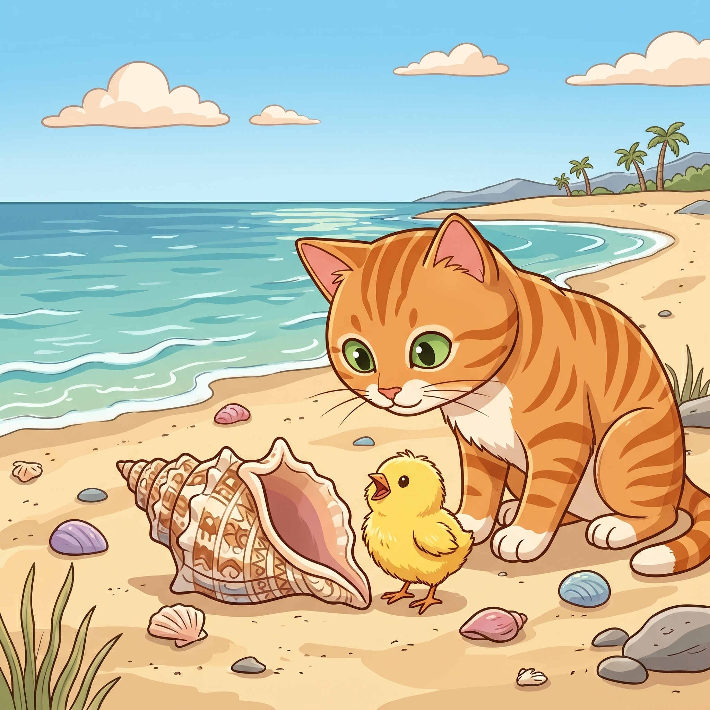

Step 1 · Say the Sound Team
ch
c and h say /ch/, like chick.
🐥chick
🎵chirp
✅check
Read ch words. Then read one tiny story.

c and h say /ch/, like chick.
Beach Cat saw a chick.
The chick was by a shell.
“Chirp! Chirp!” said the chick.
Cat had to check.
The chick just had lunch.
You read ch words like chick, chirp, and check.
That sound team can start many words.
If it still feels fun, read the story one more time.